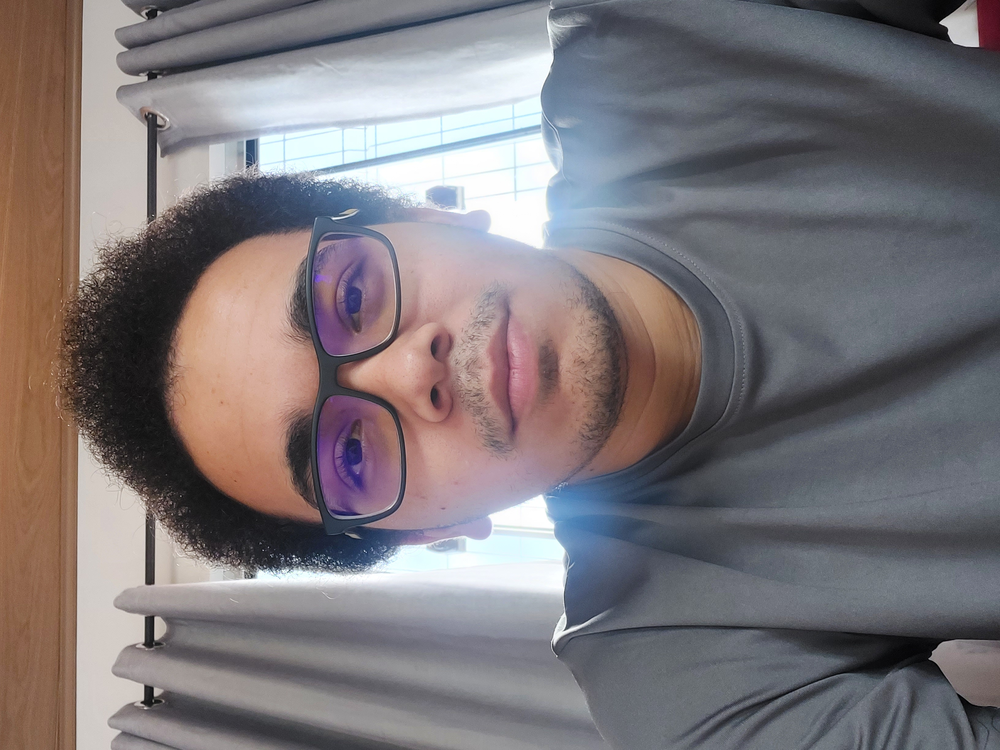
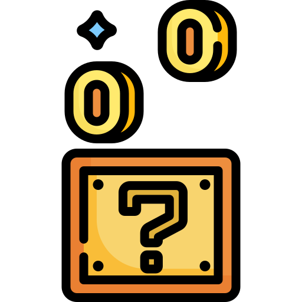

Sou natural de Macapá, capital do Amapá, onde moro há mais de 20 anos.
Demorei para ter acesso à internet, foi somente em 2010 e mesmo assim, a partir dali ela fez e faz parte do meu dia a dia, desde jogos onlines a sites. A escolha de qual carreira profissional seguir não foi difícil, e venho estudando Desenvolvimento Web, pretendendo ser um desenvolvedor web.
Esse sou eu:

Habilidades e Competências
Aprender a aprender:Gosto de estudar, principalmente conteúdos novos e não me importo de passar horas, ou dias para aprender.
Responsabilidade: Me sinto confortável e entusiasmado quando sou responsável por fazer ou entregar algo, e me empenho para fazer o mais perfeito possível.
Empatia: Tento sempre observar e entender os sentimentos, condição e situação dos que estão ao meu redor, para que possa ajudar de forma empática e melhor a todos.
Comunicação: Busco dar atenção para ouvir e me expressar da melhor maneira, para que agrega positivamente em informações e não cause confusão ou interferência.